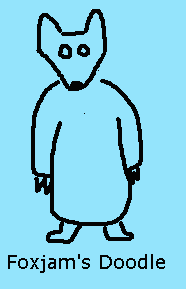
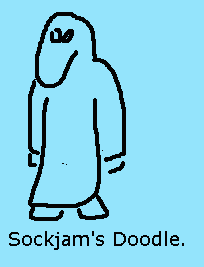

| [ topics ] [ services ] [ online commerce ] [ products ] [ free stuff! ] [ us ] | |
| [ topics ] [ services ] [ online commerce ] [ products ] [ free stuff! ] [ us ] | |
Toonbots -- Spare parts[ back to toonbots ] [ boxjam spinoffs ] [ diabolica variations ] [ debugging graphics ] [ paftwj ] | |||||||
| |||||||
|
| |||||||
|
If you're really cool, you remember the Boxjam spinoff contest thingy we had a couple of months ago over at
Boxjam's Doodle. I ended up drawing no fewer than nineteen of them.
OK. Individually, none was quite as impressive as Brad Guigar's Scooby
Dooby Doodle, and of course didn't even come close to Tirdun's magic
8-ball animated doodle homage thing... But all together in a pile, they still say something about my sheer obsession
with Mainlining Blue. Yeah. And I did every one of them with Notepad. This is what led me to actually start writing
the Toon-o-Matic, actually.
So here they are in a jumbled mess, because I haven't taken the time to put them all on a nice shelf yet. I'm busy. BUT APPARENTLY NOT AS BUSY AS BOXJAM, who still hasn't made a page for these.
This was shortly followed by a couple of other sort-of rhyming spinoffs: I particularly like BoxJam's Footle because it has a couple of inside jokes. That's one characteristic of good fan art if you ask me. Bogglejam, or, Boxjam's Oodles. I like this one, too. BoxJam's Brew-le. OK. It's a stretch. Note Cliff and Norm in the backgroun... BorgJam, Too-Much-Coffee-Jam, EstoxJam, FoxJam, SoxJam (a sockpuppet, see?) and BoxJam/Fooker, because Fooker sounds at least a tiny bit like "Doodle."   So football doesn't sound much like Doodle, but this is BoxJam's Football. This was in a completely different thread, but I rather like it. BoxJam's Vote-le ButchJam. From Chopping Block, if you're so uncool as to have to ask.
Then there was a bilingual spin-off: And BatJam's Doodle: And BoxJam's encounter with his evil twin. This was a cut-and-paste rendition, and all I did was take the evil twin and turn his head upside-down. I thought this was hilarious. And just when you thought it was safe to go back to BoxJam's forum: | |||||||
|
| |||||||
A similarly fun thing that didn't quite reach the manic proportions of
Mainlining Blue was the time I drew some variations on a theme for
Diabolica when Adam was on hiatus
and we had to look at the same strip for eight days straight. OK, granted, it
was a funny strip, but I decided it needed a little spicing up.

| |||||||
|
| |||||||
|
I'm finding during development of the amazing Toon-o-Matic that debugging programs with
graphical output can be really fun. As in, funny output. I'll stack the outtakes over here.
This was a puzzler... And this didn't look too much like the flag. | |||||||
|
| |||||||
|
Founded by Tirdun, then usurped by gopher when it developed that Tirdun had never posted on the Toonbots forum, the
PAFTWJ is a force for freedom and justice throughout the world. Wherever minimalist humor or automated tooning are
maligned, the PAFTWJ is ready to step in and ... um... Well. You know, I'm not quite sure what it is, exactly, that
the PAFTWJ actually does. Guys? I could use some help here.
Hey! The PAFTWJ now has a separate page, with fan art and everything! |